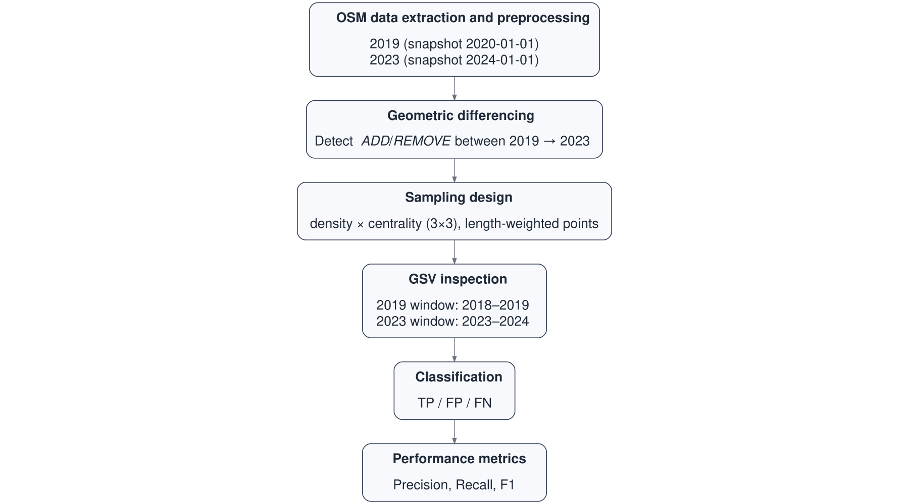
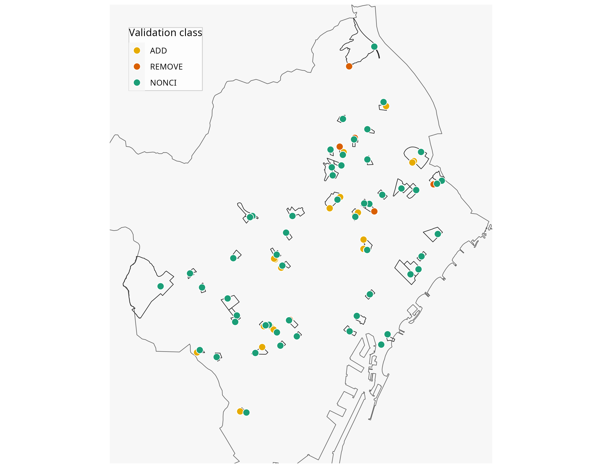
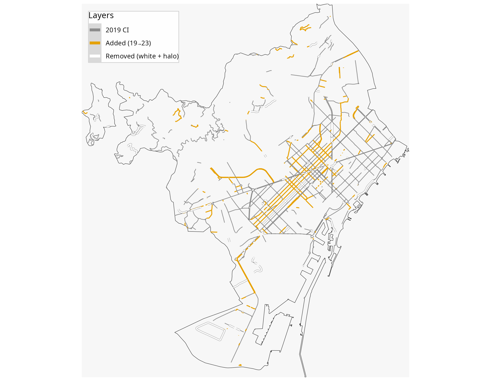

🔗 Part of the ATRAPA database project
⬅️ Back to project overview ➡️ Next repo related: Electoral and socioeconomic data
Validating OpenStreetMap for detecting cycling-infrastructure change: A Barcelona pilot using Google Street View (2019–2023)
Introduction
Context: Urban transformations, such as new or upgraded bike lanes, can reshape mobility and health, but studying their effects requires reliable historical data.
Problem: Standardised datasets of infrastructure change are rarely available across cities and years.
Potential solution: Volunteered Geographic Information, especially OpenStreetMap (OSM), provides open and historical data on infrastructure, offering a promising way to track changes over time. However, the reliability of OSM data for detecting infrastructure change is uncertain and requires systematic validation.
Aim: Determine whether OSM reliably reflects new or removed bike lanes in Barcelona using dated Google Street View as ground truth.
Contribution: We benchmark OSM’s change detection (precision, recall, F1) and share a reusable validation workflow that others can apply; we also outline calibration as a next step.
Data and methods
Data sources
OpenStreetMap (OSM): open, collaboratively mapped vector data with tags for cycling infra.
Google Street View (GSV): geotagged, time-stamped street-level imagery. (Right now they’re just headings.)
Methods
OSM data extraction and preprocessing
Extraction: Download OSM linework for both years (snapshot dates: 2020-01-01 for 2019 and 2024-01-01 for 2023).
CI selector:
Keep segments with:
highway=cycleway•cycleway=*orcycleway:left/right/both=*(lane/track/opposite/separate) •bicycle_road=yes• designatedpath/footway/trackfor bicycles.Normalize geometries; metric CRS; min-length filter; tolerance buffer to reduce sliver noise.
Non-CI (general network): Base roads excluding all CI tags (strict complement).
Geometric differencing
ADDED: CI present in OSM 2023 but absent in OSM 2019.
REMOVED: CI present in OSM 2019 but absent in OSM 2023.
All changes were computed through buffered geometric differencing and short-segment filtering to remove spurious fragments.
Sampling design
Stratified tracts: Pre-selected census tracts by centrality × density (3×3).
Sampling within tracts: From each sampled tract, length-weighted segments were drawn for ADD, REMOVE, and NONCI classes (typically up to 2 ADD, 2 REMOVE, 1 NONCI per tract).
Validation point: Midpoint of the sampled segment, used as the anchor for manual inspection (GSV).

GSV inspection
Tolerance windows. 2019 condition: 2018–2019; 2023 condition: 2023–2024.
Procedure. At each sampled point, inspect both windows; if either window is not verifiable, exclude the point from accuracy stats.
Variables recorded (per year). presence_[year] (Y/N/NA), notes_[year] (free text).
Classification
OSM-flagged ADD. TP if CI absent in 2019 and present in 2023; otherwise FP.
OSM-flagged REMOVE. TP if CI present in 2019 and absent in 2023; otherwise FP.
NONCI points. Used to detect FN (true changes that OSM did not flag).
Usable points. Only points with both years verifiable enter precision/recall.

Performance metrics
Precision = TP / (TP + FP)
Recall = TP / (TP + FN)
F1 = 2·Precision·Recall / (Precision + Recall)
Notes. Precision is computed on OSM-flagged points (ADD/REMOVE); FN comes from NONCI points. Report metrics by class and pooled, with 95% CIs.
Results
OSM-derived change estimates
The OSM-mapped cycling network in Barcelona expanded from 214.9 km in 2019 to 264.0 km in 2023—a net increase of 49.0 km (≈ 23%). Segment-level differencing identified 65.5 km of additions and 23.4 km of removals (Table 1). Although these figures imply a slightly lower net growth (42.1 km), the overall consistency suggests good agreement between yearly totals and change estimates.
Additions were concentrated in dense, central areas, particularly in D3_C3 (14.9% of added km), D3_C2 (16.5%), and D2_C1 (14.7%)—together accounting for nearly half of all mapped growth (Table 2). Removals were less frequent and more spatially fragmented, occurring mainly in D2_C2 (31.2%), D2_C3 (23.0%), and D2_C1 (19.5%), suggesting higher map churn in intermediate-density tracts.

| Metric | Value |
|---|---|
| Total 2019 (km) | 214.9 |
| Total 2023 (km) | 264.0 |
| Net growth (km) | 49.0 |
| Added (km) | 65.5 |
| Removed (km) | 23.4 |
| Added − Removed (km) | 42.1 |
| Gap: (Added−Removed) − Net | -7.0 |
| stratum | Added_km | Removed_km | Added_pct | Removed_pct |
|---|---|---|---|---|
| D1_C1 | 0.2 | 0.0 | 7.5% | 4.4% |
| D1_C2 | 0.3 | 0.1 | 10.2% | 8.9% |
| D1_C3 | 0.3 | 0.1 | 13.7% | 12.9% |
| D2_C1 | 0.4 | 0.1 | 14.7% | 19.5% |
| D2_C2 | 0.3 | 0.2 | 10.3% | 31.2% |
| D2_C3 | 0.1 | 0.1 | 4.4% | 23.0% |
| D3_C1 | 0.2 | 0.0 | 7.8% | 0.0% |
| D3_C2 | 0.4 | 0.0 | 16.5% | 0.0% |
| D3_C3 | 0.4 | 0.0 | 14.9% | 0.0% |
Validation results
Validation sampled 129 points across all nine density–centrality strata (34 ADD, 7 REMOVE, 88 NONCI). Among OSM-flagged changes with verifiable imagery (n = 26; 22 ADD, 4 REMOVE), ADD performed well (precision 0.77 [0.57–0.90]; recall 1.00 [0.82–1.00]; F1 0.87), whereas REMOVE remained weak (precision 0.25 [0.05–0.70]; recall 0.50 [0.10–0.91]; F1 0.33). Pooled over classes: precision 0.69 [0.50–0.84], recall 0.95 [0.75–0.99], F1 0.80.
| stratum | REMOVE | ADD | NONCI | Total |
|---|---|---|---|---|
| D1_C1 | 1 | 2 | 6 | 9 |
| D1_C2 | 1 | 4 | 6 | 11 |
| D1_C3 | 1 | 3 | 6 | 10 |
| D2_C1 | 2 | 2 | 6 | 10 |
| D2_C2 | 1 | 3 | 6 | 10 |
| D2_C3 | 1 | 1 | 6 | 8 |
| D3_C1 | 0 | 1 | 6 | 7 |
| D3_C2 | 0 | 3 | 6 | 9 |
| D3_C3 | 0 | 4 | 6 | 10 |
| TOTAL | 7 | 23 | 54 | 84 |
| Class | n (usable) | TP | FP | FN | Precision | Precision (95% CI) | Recall | Recall (95% CI) | F1 |
|---|---|---|---|---|---|---|---|---|---|
| ADD | 22 | 17 | 5 | 0 | 0.773 | 0.773 [0.566–0.899] | 1.000 | 1.000 [0.816–1.000] | 0.872 |
| REMOVE | 4 | 1 | 3 | 1 | 0.250 | 0.250 [0.046–0.699] | 0.500 | 0.500 [0.095–0.905] | 0.333 |
| Pooled | 26 | 18 | 8 | 1 | 0.692 | 0.692 [0.500–0.835] | 0.947 | 0.947 [0.754–0.991] | 0.800 |
Interpretation and possible calibration use
We found that OSM captures most new cycling infrastructure in Barcelona but misses or misclassifies some removals. In other words, OSM is very good at detecting where new bike lanes appear, but it sometimes shows minor edits or re-tagging as false additions and does not always record when lanes are removed. This means that OSM data can already be used to study urban change, but the raw figures may slightly overestimate total network growth.
Calibration could help correct the small biases observed in OSM-derived estimates. Using the validation metrics—precision and recall—we could adjust OSM measurements to better approximate real-world change. For example, if OSM’s precision for additions is 0.77, multiplying the detected additions by this factor would yield a more realistic estimate of true new infrastructure. Because validation was stratified by density and centrality, this calibration could also be applied separately within each stratum, allowing for spatially differentiated correction where OSM accuracy varies across the city. Such calibration would make OSM-based indicators more reliable and comparable for longitudinal analyses of urban transformation.